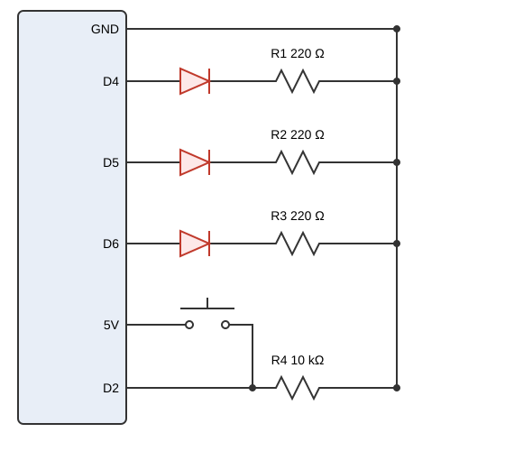
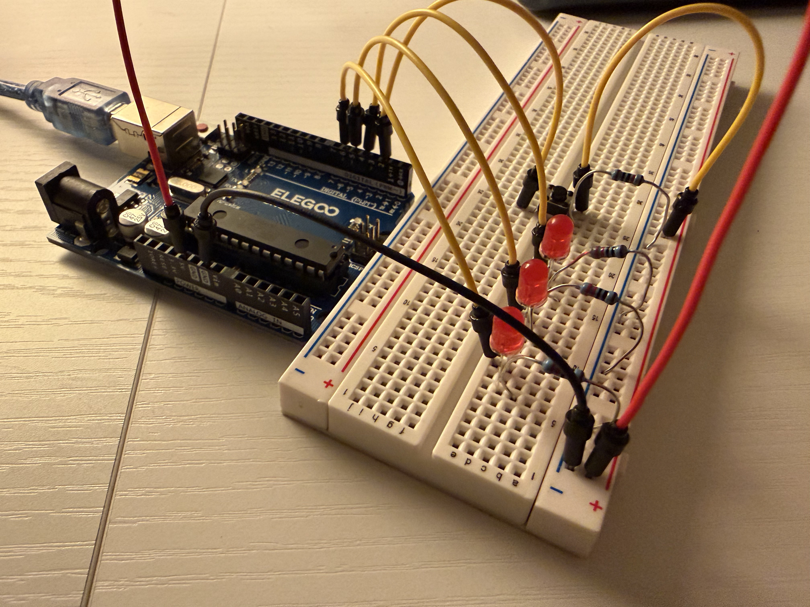
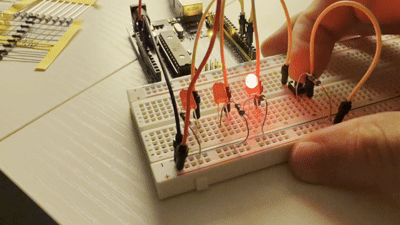
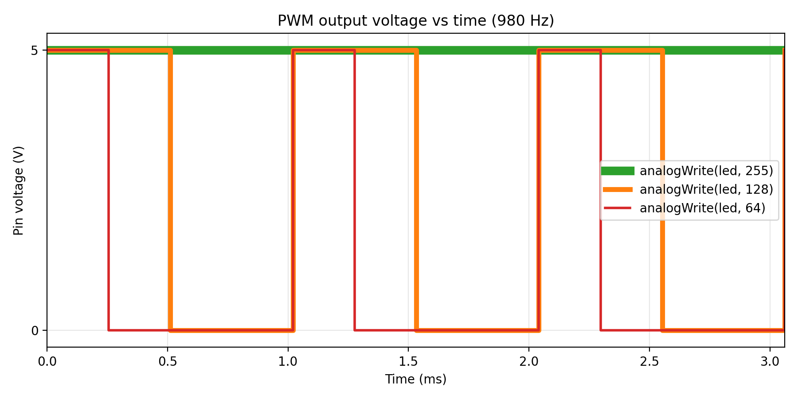

Three red LEDs and a button on an Arduino Uno. With the button released, one LED is on. While the button is held, a second LED turns on and a third LED fades up and down.

Kirchhoff's voltage law around each branch gives Vpin - VR - Vf = 0, so VR = 5 V - Vf. Ohm's law then gives R = VR / I. Using the 20 mA LED rating as the maximum current gives the smallest resistor allowed:
| LED | Vf | VR = 5 - Vf | Minimum R at 20 mA | Resistor used | Current, I = VR / R |
|---|---|---|---|---|---|
| Red (all three) | 2.0 V | 3.0 V | 3.0 / 0.020 = 150 Ω | 220 Ω | 3.0 / 220 = 13.6 mA |
I used 220 Ω because it is the next standard value above the 150 Ω minimum, and it is the same value I used for the red LED in A1.
When the button is open the 10 kΩ resistor connects pin D2 to GND, so the input reads a clean LOW instead of floating and picking up noise. When the button is pressed, 5 V reaches D2 and the pin reads HIGH, and the same resistor limits the current from 5 V to GND:
I = V / R = 5 V / 10,000 Ω = 0.5 mA
This is small, so almost no power is wasted and the button and the 5 V rail are protected. A much smaller value would draw more current every time the button is pressed, and a much larger one would connect the pin to GND less firmly.


// Pin for the fading LED (pin 5 supports PWM)
const int fadeLed = 5;
// Pin for the LED that is on while the button is pressed
const int pressedLed = 6;
// Pin for the LED that is on while the button is not pressed
const int idleLed = 4;
// Pin the button is wired to
const int buttonPin = 2;
// setup() runs once when the board powers on
void setup() {
// Set the fading LED pin as an output
pinMode(fadeLed, OUTPUT);
// Set the pressed LED pin as an output
pinMode(pressedLed, OUTPUT);
// Set the idle LED pin as an output
pinMode(idleLed, OUTPUT);
// Set the button pin as an input (external pull-down holds it LOW)
pinMode(buttonPin, INPUT);
}
// loop() runs over and over after setup()
void loop() {
// Read the button: HIGH if pressed, LOW if not
int pressed = digitalRead(buttonPin);
// Turn the pressed LED on only while the button is held
digitalWrite(pressedLed, pressed);
// Turn the idle LED on only while the button is not held
digitalWrite(idleLed, !pressed);
// Keep the fading LED off unless the fade below runs
analogWrite(fadeLed, 0);
// Only fade the third LED if the button is pressed
if (pressed == HIGH) {
// Count brightness up from 0 to 255 in steps of 5
for (int brightness = 0; brightness <= 255; brightness += 5) {
// Set the PWM duty cycle to the current brightness
analogWrite(fadeLed, brightness);
// Wait 30 ms so the dimming effect is visible
delay(30);
}
// Count brightness back down from 255 to 0 in steps of 5
for (int brightness = 255; brightness >= 0; brightness -= 5) {
// Set the PWM duty cycle to the current brightness
analogWrite(fadeLed, brightness);
// Wait 30 ms so the dimming effect is visible
delay(30);
}
}
}
Each pass through loop() reads the button with
digitalRead() and sets the idle and pressed LEDs with
digitalWrite(). While the button is held, two
for loops step the brightness from 0 to 255 and back to 0,
and analogWrite() turns each brightness value into a PWM duty
cycle on pin 5.

Pins 5 and 6 on the Uno run PWM at about 980 Hz, so the period is 1 / 980 Hz = 1.020 ms. The duty cycle is the analogWrite value divided by 255, the high time is the duty cycle times the period, and the average voltage is the duty cycle times 5 V.
| analogWrite value | Duty cycle | High time per period | Average voltage |
|---|---|---|---|
| 64 | 64 / 255 = 25.1% | 0.251 × 1.020 ms = 0.256 ms | 0.251 × 5 V = 1.25 V |
| 128 | 128 / 255 = 50.2% | 0.502 × 1.020 ms = 0.512 ms | 0.502 × 5 V = 2.51 V |
| 255 | 255 / 255 = 100% | 1.020 ms (always high) | 5 V |
This is the voltage at the Arduino pin. The voltage across the LED itself is lower when it is on (about 2 V) because the series resistor drops the rest.
Each LED draws 3.0 V / 220 Ω = 13.6 mA, and all three on is 3 × 13.6 mA = 40.9 mA. Each pin is under the 40 mA per pin limit, and the total is under the 150 mA total limit, so the circuit is below the Arduino limits.
Battery life = 1200 mAh / 40.9 mA = 29.3 hours. This counts only the LEDs. The Arduino board itself also draws current, so the real runtime would be shorter.
1.99 V across the LED when it is on. The forward voltage I used for a red LED is 2.0 V. The measured and theoretical values are nearly identical, and the small difference is likely due to measurement error.
I used AI to help generate python code for the voltage vs time graph. Making graphs in python is simple but time consuming and tedious, so being able to communicate the requirements in plain text is helpful